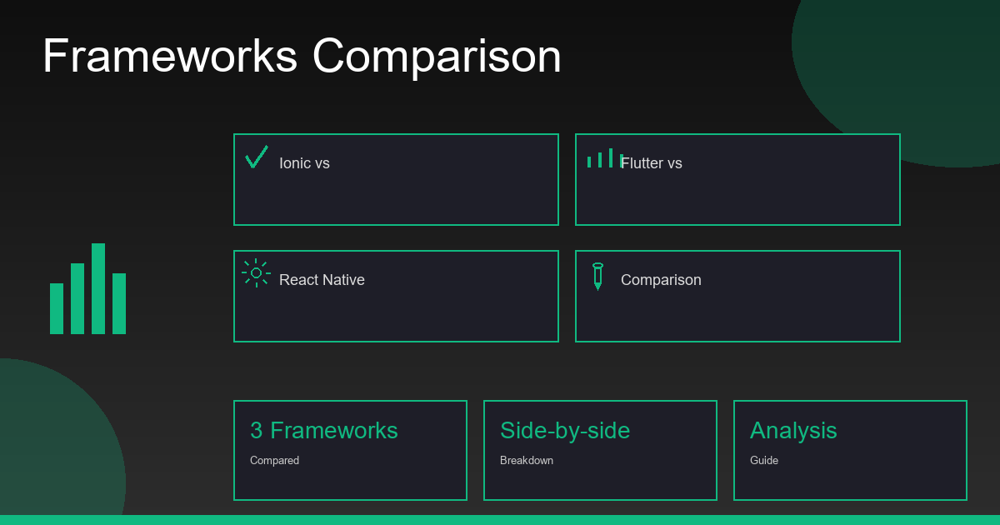

📱 Ready to Build Your Mobile App?
Our Mobile App Development Service builds production-ready iOS and Android apps with Ionic, Flutter, or React Native — whichever fits your needs best. Get a free consultation →
Every client who comes to me with a mobile app idea asks the same question: "Should I build with Ionic, Flutter, or React Native?" After 15+ years of mobile development and shipping 30+ cross-platform apps, I've built production apps with all three frameworks. Here's my honest, opinionated, experience-based answer — not a rehash of the official documentation.
The short answer: there is no single "best" framework. The right choice depends on your team's skills, your app's requirements, your budget, and how fast you need to ship. Let me break down exactly when each framework wins.
The Quick Summary: Which Framework Wins Where
📱 Ionic — Best for Web Teams & Business Apps
Choose Ionic when you have a web development team, need a PWA alongside mobile apps, or are building B2B tools, dashboards, CRMs, or booking systems. Fastest time-to-market, lowest cost, lowest learning curve. Learn more in our comprehensive Ionic framework guide.
- Uses HTML, CSS, TypeScript — skills your team already has
- One codebase for iOS, Android, and PWA
- Fastest MVP delivery (3–6 weeks for a standard app)
- Most cost-effective, especially with Indian developers
🔨 React Native — Best for High-Performance Consumer Apps
Choose React Native when you need near-native performance, have React/JavaScript developers, and are building consumer-facing apps where responsiveness and animations matter.
- Near-native performance via the New Architecture (Fabric + JSI)
- Massive ecosystem and community
- Backed by Meta — large-scale production-proven
- Good for apps with complex gesture handling and animations
🌸 Flutter — Best for Pixel-Perfect UI & New Teams
Choose Flutter when UI consistency across platforms is critical, you need rich animations or game-like visuals, and your team is starting fresh and willing to learn Dart.
- Own rendering engine — pixel-perfect on every device
- Best for highly customised, branded UI
- Backed by Google — strong long-term support
- Highest developer satisfaction in 2025 surveys
The Full Comparison: Every Factor That Matters
| Factor | Ionic | React Native | Flutter |
|---|---|---|---|
| Language | HTML / CSS / TypeScript | JavaScript / TypeScript | Dart (new language to learn) |
| Learning Curve | Very Low — web skills transfer | Low–Medium | High — must learn Dart |
| UI Rendering | WebView (HTML/CSS) | Native components via bridge | Own rendering engine (Skia/Impeller) |
| Performance | Good for business apps | Near-native | Near-native |
| PWA / Web Support | Excellent — first-class PWA | Limited / experimental | Beta / limited |
| Dev Speed (MVP) | Fastest (web skills reuse) | Medium | Slower (Dart learning + hot reload) |
| Development Cost | Lowest | Medium | Medium–High |
| Talent Availability (India) | Very High (web developers) | High | Medium (growing) |
| Native Device APIs | Via Capacitor plugins | Via native modules | Via platform channels |
| App Size | Small–Medium | Medium | Larger (ships own renderer) |
| Backed By | Ionic Team + Capacitor | Meta (Facebook) | |
| Best For | B2B, MVPs, dashboards, PWA | Consumer apps, social, e-commerce | Branded UI, games, new teams |
Performance: The Honest Truth
Performance is the most misunderstood part of this comparison. I've seen clients reject Ionic based on a 2019 blog post that hasn't been updated since Capacitor replaced Cordova.
Ionic Performance in 2026
Ionic 7 with Capacitor uses the device's native WebView (WKWebView on iOS, Chrome WebView on Android). These engines are now extremely fast — they power apps like Figma, Google Docs, and Microsoft Teams. For the vast majority of business apps — dashboards, CRMs, booking systems, delivery tracking — you will not find a performance difference that users notice.
Where Ionic does show its WebView roots: 60fps complex animations with heavy concurrent JavaScript, and GPU-accelerated 3D visuals. If you're building the next Instagram Reels or a mobile game, Ionic is not the right choice.
React Native Performance in 2026
The New Architecture (Fabric renderer + JSI bridge), which became stable in 2024, addressed the main historical performance bottleneck of React Native. The JavaScript-to-native bridge is now synchronous and much faster. For high-gesture, animation-heavy apps, React Native now genuinely delivers near-native performance.
Flutter Performance in 2026
Flutter uses its own rendering engine (Skia, transitioning to Impeller on iOS). It draws every pixel itself — which is why Flutter apps look identical on iOS and Android, but also why app bundle sizes are larger. Performance is excellent for complex UIs, but the larger binary size can be a consideration for markets with slower networks.
Development Cost: India Rates in 2026
Cost is where the decision often becomes clear. Here are honest market rates for Indian developers in 2026:
| Framework | Junior Developer ($/hr) | Senior Developer ($/hr) | Simple App (USD) | Full App (USD) |
|---|---|---|---|---|
| Ionic | $8–$15 | $20–$40 | $800–$1,500 | $2,000–$5,000 |
| React Native | $12–$20 | $25–$50 | $1,200–$2,500 | $3,000–$8,000 |
| Flutter | $10–$18 | $22–$45 | $1,000–$2,000 | $2,500–$7,000 |
Ionic is consistently cheaper because the developer pool is larger — any web developer can become an Ionic developer. React Native and Flutter require more specialised experience, reducing the available talent pool and driving up rates.
PWA Support: Ionic's Unique Advantage
This is the one dimension where Ionic has no real competition. Because Ionic builds on standard web technologies, the same codebase produces a fully functional Progressive Web App — no extra development needed.
What this means practically:
- Your app works in a browser without App Store installation
- Enterprise users can access it from a laptop via browser
- Faster distribution in markets with low smartphone penetration
- Can be deployed to a CDN (Netlify, Vercel) alongside mobile apps
- Offline capability via service workers — no native code required
React Native's web support is experimental and requires React Native for Web (a separate package with significant limitations). Flutter Web is improving but still beta-quality for complex apps.
When to Choose Each Framework: Decision Guide
Choose Ionic if:
- Your team knows Angular, React, Vue, or plain JavaScript
- You need both a mobile app and a Progressive Web App
- You're building a B2B tool: CRM, ERP, dashboard, booking system, delivery tracker
- You have a tight budget or timeline (MVP in 3–5 weeks)
- Your app requires lots of forms, data tables, and list views
- You're targeting enterprise clients who access via both browser and mobile
Choose React Native if:
- Performance and animation smoothness are critical (social apps, marketplaces)
- Your team has strong React.js experience
- You need deep integration with third-party native SDKs (AR, custom camera, ML Kit)
- You're building a consumer app competing with the App Store's top apps
- You need Expo's managed workflow for very fast prototyping
Choose Flutter if:
- Pixel-perfect, highly branded UI is a core requirement
- Your team is starting fresh and willing to learn Dart
- You need consistent UI across iOS, Android, Web, Desktop from one codebase
- You're building an app with rich custom animations or data visualisations
- Google's investment and long-term support commitment matters to your stakeholders
Real Projects: Which Framework I Actually Chose and Why
Real estate viewing management app (UK client): Ionic. The client had a Laravel web developer on staff. We used Ionic + Angular + Capacitor Camera/Geolocation. Shipped to both iOS and Android in 4 weeks. Total cost: $2,400.
Logistics delivery tracking app (India): Ionic. Real-time GPS tracking, background sync, WhatsApp notification integration. The web team already knew Angular. Shipped in 3 weeks. Works as both mobile app and browser dashboard.
Consumer fitness app (Australia): React Native. The client needed 60fps animation in the workout timer and complex gesture-driven exercise flow. WebView-based animation would have been noticeably janky. React Native + Reanimated 3 was the right call.
Multi-brand retail app (UAE): Flutter. The brand required pixel-perfect UI fidelity across 8 product lines with custom typography and colour schemes. Flutter's own renderer guaranteed visual consistency that neither Ionic nor React Native could match cost-effectively.
Frequently Asked Questions
Is Ionic better than Flutter in 2026?
Ionic is better than Flutter for business apps, MVPs, and teams with web skills. Flutter is better for pixel-perfect custom UI and apps that need rich animations. There is no absolute winner — it depends on your project and team.
Which is faster to develop — Ionic, Flutter, or React Native?
Ionic is the fastest for teams with web skills. A developer who knows Angular or React starts being productive on day one. Flutter requires learning Dart (4–8 week ramp-up). React Native sits in the middle. For pure development speed, Ionic wins.
Is React Native dying in 2026?
No. React Native is actively maintained by Meta with the New Architecture delivering major performance improvements. It remains one of the most used cross-platform frameworks globally. However, Flutter has overtaken it in developer satisfaction surveys, and Ionic is preferred for web-first teams.
Can Ionic apps look as good as Flutter apps?
For standard business UI (lists, forms, dashboards, modals) — yes, absolutely. For highly custom, branded, or animation-heavy UI — Flutter has the edge because it renders every pixel itself. Ionic uses platform-native components which look great but cannot be pixel-controlled to the same degree as Flutter.
Not Sure Which Framework to Choose?
Tell me about your project in a free 30-minute call. I'll recommend the right framework for your team, timeline, and budget — no sales pitch, just honest advice.
💬 Book Free Consultation
Anju Batta
Senior Full Stack Developer & AI Automation Architect with 15+ years of experience. I've shipped production apps in Ionic, React Native, and Flutter — so this comparison comes from real project experience, not just documentation reading. Based in Chandigarh, India.
View Ionic App Development Services →